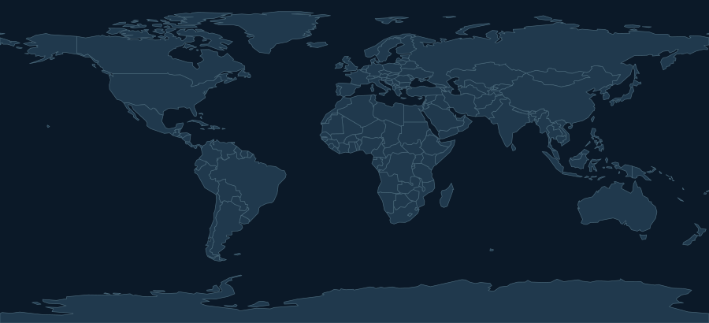

Erdbeben
Signifikante Beben laut USGS.
Noch nicht freigegebenÖFFENTLICHES LAGEBILD / NATUREREIGNISSE
Gefahrenmeldungen aus Originalquellen, mit Herkunft und Datenstand. Jede Quelle wird vor der öffentlichen Anzeige geprüft.
THEMENRADAR / NATURAL HAZARDS
Diese Themen sind vorgesehen. Ein Themenfeld gilt erst dann als live, wenn seine Quelle im öffentlichen Datenstand erscheint.
Signifikante Beben laut USGS.
Noch nicht freigegebenInternationale Ereignisse über GDACS.
Noch nicht freigegebenAusbrüche und Meldungen über GDACS.
Noch nicht freigegebenEreignisse über GDACS.
Noch nicht freigegebenGeomagnetische, Strahlungs- und Radiostörungen laut NOAA.
Noch nicht freigegebenGEO OVERVIEW

Die Karte dient der geografischen Orientierung und zeigt keine Ereignismarkierungen. Aktuelle Meldungen stehen als Liste darunter. Eine leere Karte ist keine Entwarnung.
DOKUMENTIERTE MELDUNGEN / ORIGINALQUELLEN
Einträge werden mit Zeitpunkt, Quellenstatus und Link zur Originalmeldung angezeigt.
TRANSPARENZ / DATENHERKUNFT
Hier stehen Datenstand, Abrufzustand und Abdeckung jeder freigegebenen Quelle.
Derzeit ist keine Datenquelle zur öffentlichen Anzeige freigegeben.
Titel erscheinen in der Originalsprache der Quelle. Warnstufen stammen von der jeweiligen Behörde und werden nicht untereinander verglichen. Fehlt eine Warnstufe, ist das keine Entwarnung.